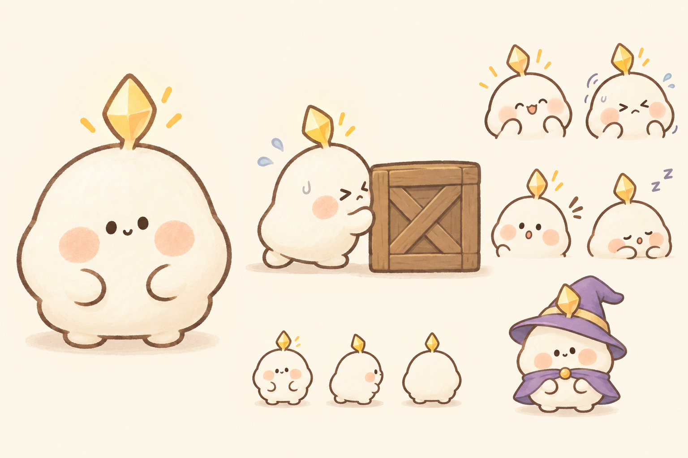
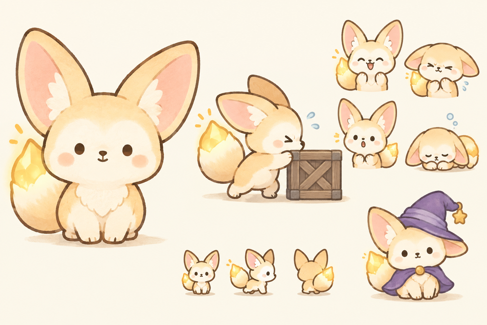
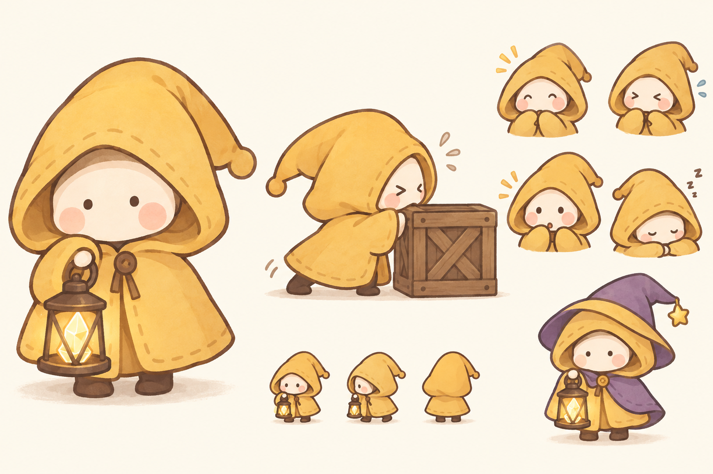
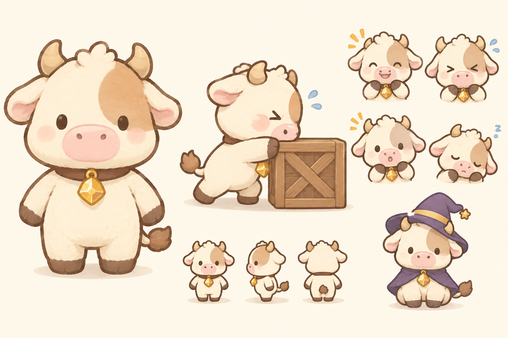

주 타겟층 분석과 캐릭터 시안 (2차)
누가 이 게임을 할지부터 다시 보고 그린 시안입니다. 게임에는 아직 넣지 않았습니다.
누가 이 게임을 하는가
- 성별과 나이: 퍼즐 장르는 이용자의 약 70%가 여성이고 60%가 35세 이상입니다. 전체 게이머의 중심 연령대는 25~44세(49%)입니다.
- 하는 이유: 스트레스 해소와 틈새 시간 보내기입니다. 경쟁이나 성취보다 편안함을 찾습니다.
- 이 게임의 위치: 블록 밀기는 캔디크러시류보다 머리를 더 쓰는 쪽이라, 그중에서도 "조용히 생각하는 퍼즐"을 좋아하는 사람이 남습니다. 짧게 한 판씩, 한 손으로 합니다.
- 돈을 쓰는 지점: 이 게임의 수집 요소는 치장 뽑기입니다. 캐릭터가 "갖고 싶고 꾸미고 싶은" 대상이 아니면 뽑기가 의미가 없습니다.
정리한 주 타겟: 25~44세 여성 중심의 캐주얼 퍼즐 이용자. 메신저 이모티콘과 캐릭터 굿즈에 익숙하고, 쉬는 시간에 조용히 한 판씩 하는 사람.
근거: ESA Global Video Games Report 2025(22개국 24,216명 조사). "이모티콘과 굿즈에 익숙하다"는 부분은 조사 수치가 아니라 한국 시장을 염두에 둔 제 판단입니다.
지금 캐릭터가 왜 약한가
| 문제 | 이 타겟에게 어떻게 보이는가 |
|---|---|
| 정체가 없다 | 노란 공에 눈만 붙어 있어 "무엇"인지 말할 수 없습니다. 동물도 사람도 아니라 정을 붙일 실마리가 없습니다. |
| 광택 나는 3D 질감 | AI가 만든 흔한 모바일 광고 그림처럼 보입니다. 이 타겟이 좋아하는 이모티콘·인형의 폭신한 느낌과 반대입니다. |
| 실루엣이 원 하나 | 작게 줄이면 그냥 노란 점입니다. 치장을 입혀도 모자만 다른 공으로 보입니다. |
| 표정이 하나 | 밀 때 힘들어하거나 막혔을 때 당황하는 모습이 없습니다. Cut the Rope의 옴놈이 사랑받는 이유는 작은 반응들 때문입니다. |
그래서 잡은 방향
- 광택 3D를 버리고, 외곽선이 부드러운 납작한 2D로 그립니다(이모티콘, 인형 느낌).
- 아이콘 크기로 줄여도 알아볼 수 있는 실루엣 하나를 줍니다.
- 표정 네 가지(기쁨, 힘씀, 놀람, 졸림)를 처음부터 같이 설계합니다.
- 이야기는 그대로 둡니다. 깨진 심장의 빛 조각이라는 설정에 맞게 모든 시안이 금빛 결정을 지닙니다.
A. 말랑 정령 추천
소심하지만 뭐든 열심히 하는, 떡처럼 말랑한 빛 조각

- 상징
- 머리에서 새싹처럼 돋은 금빛 결정 하나. 놀라면 결정이 반짝이고 졸면 꺼집니다.
- 타겟과의 맞음
- 가장 단순하고 "하찮게 귀여운" 쪽입니다. 이모티콘으로 바로 쓸 수 있는 형태입니다.
- 지금 게임과의 연결
- 정령 설정과 치장 22종("정령이 다른 모습을 빌려 입는다")을 그대로 쓸 수 있습니다. 몸통·팔·발 구조도 지금 리그와 같아 다시 만드는 양이 가장 적습니다.
- 걱정되는 점
- 흰 몸이라 밝은 바닥 위에서 묻힐 수 있습니다. 외곽선과 그림자로 풀어야 합니다.
B. 빛꼬리 여우
호기심 많고 장난스러운 아기 사막여우. 실패하면 귀가 처집니다

- 상징
- 큰 귀와, 끝이 금빛 결정처럼 타오르는 꼬리. 꼬리가 길을 비춥니다.
- 타겟과의 맞음
- 동물이라 가장 넓게 통하고, 실루엣이 네 시안 중 가장 뚜렷합니다. 귀와 꼬리로 감정을 보여 줄 수 있습니다.
- 지금 게임과의 연결
- "심장의 빛을 꼬리에 받은 여우"로 이야기를 조금 고치면 됩니다. 귀와 꼬리 때문에 리그에 뼈대를 더해야 하고, 치장은 "옷을 입은 여우"로 전부 다시 그려야 합니다.
- 걱정되는 점
- 귀가 커서 한 칸 안에 넣으면 몸이 작아집니다. 작업량이 가장 많습니다.
C. 등불지기 아이
말수가 적고 용감한, 동화책 속 아이

- 상징
- 몸을 다 덮는 큰 노란 두건 망토와, 불꽃 대신 결정 조각이 든 등불.
- 타겟과의 맞음
- 귀여움보다 분위기 쪽입니다. 그림책이나 감성 인디 게임을 좋아하는 성인에게 맞습니다.
- 지금 게임과의 연결
- "빛 조각을 등불에 담아 심장으로 가져가는 아이"로 이야기가 가장 자연스럽습니다. 힌트 때 등불이 빛나는 연출도 그대로 쓸 수 있습니다. 치장은 망토 색과 무늬 중심이 됩니다.
- 걱정되는 점
- 얼굴이 두건 속에 있어 작은 크기에서 표정이 잘 안 보입니다. 치장 변화의 폭이 좁습니다.
D. 아기 미노
미궁에서 태어난 순한 송아지. 몸집에 비해 힘이 셉니다

- 상징
- 작은 뿔과 한쪽 눈의 얼룩, 금빛 결정 방울이 달린 목걸이.
- 타겟과의 맞음
- 인형으로 만들기 가장 좋은 형태입니다. "힘이 세서 블록을 민다"는 설명이 바로 됩니다.
- 지금 게임과의 연결
- 미궁의 주인인 미노타우로스의 아이라 배경과 가장 잘 맞습니다. 다만 "빛 조각 정령" 이야기는 고쳐 써야 합니다.
- 걱정되는 점
- 소 캐릭터는 흔해서 이 게임만의 얼굴이 되기 어렵습니다. 팔다리가 길어 리그를 새로 잡아야 합니다.
비교
| A 말랑 정령 | B 빛꼬리 여우 | C 등불지기 아이 | D 아기 미노 | |
|---|---|---|---|---|
| 작은 크기에서 알아보기 | 좋음 | 가장 좋음 | 보통 | 좋음 |
| 치장을 입히기 | 쉬움 | 가능, 전부 새로 | 폭이 좁음 | 가능, 전부 새로 |
| 지금 이야기 유지 | 그대로 | 조금 수정 | 조금 수정 | 다시 씀 |
| 다시 만들 양 | 적음 | 많음 | 중간 | 많음 |
추천은 A 말랑 정령입니다. 타겟이 좋아하는 단순하고 폭신한 방향이면서, 지금까지 만든 이야기와 치장 체계를 버리지 않아도 됩니다. 실루엣과 동물의 친근함을 더 중요하게 보신다면 B 빛꼬리 여우가 다음입니다.
어느 시안이든 채택하면 게임 전체의 그림체(광택 3D)와 어긋나므로, 타일·블록·UI를 어디까지 맞출지도 함께 정해야 합니다.